Multi-Tier Architecture on AWS using Terraform
🚀 Overview:
The Multi-Tier Architecture project on AWS using Terraform aims to create a scalable and resilient infrastructure that leverages the power of Amazon Web Services (AWS) cloud platform. This project utilizes Terraform, an Infrastructure as Code (IaC) tool, to provision and manage the infrastructure components, enabling automation, repeatability, and scalability. The primary objective of this project is to design and deploy a multi-tier architecture on AWS that consists of multiple layers, including presentation, application, and database tiers. Each tier is deployed across multiple Availability Zones (AZs) for high availability and fault tolerance.
🔧 Problem Statement
Terraform is an IaC software tool that provides a consistent command line interface (CLI) workflow to manage hundreds of cloud services. Terraform codifies cloud APIs into declarative configuration files. In this specific case you need to create foundation Networking(VPC, Subnets, route table, IGW, NAT Gateway...), virtual machines (EC2 instances), databases (RDS), distribution of traffic (ELB) and Auto-scaling (ASG). Terraform will automatically use the configuration files to provide the infrastructure resources and run application needed. Terraform will use his deployment to provide all AWS needed elements avoiding us to use the console and it will automate the setup, ensuring consistency and reducing human error.
💽 Techonology Stack
The architecture consists of the following three tiers:
-
VPC: AWS VPC
-
AutoScaling: AWS ASG
-
Elastic Load Balancer: AWS ELB
-
Database: AWS RDS
-
File Configuration: Terraform
📌 Architecture Diagram
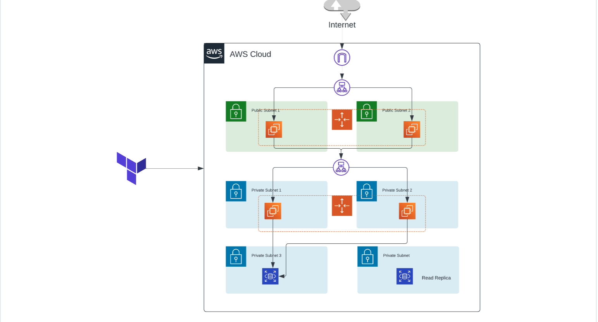
🌟 Project Requirements
Before you get started, make sure you have the following prerequisites in place:
- Terraform installed on your local machine.
- AWS IAM credentials configured in your text editor. In this case we will use VSCODE.
- Git installed on your local machine and Github account set up Github
- Git for cloning the repository.
You must know and understand:
- High Availability: The architecture is designed for fault tolerance and redundancy. Reason why resources will be deploy across two avaibility zones to ensure resilience to failures.
- Scalability: Easily scale the web and application tiers to handle varying workloads automaticaly based on demand.
- Security: Implementing security best practices such as Security groups and network ACLs are configured to ensure a secure and protected environment.
You must also know Terraform workflow

📋 Table of Contents
I - Terraform Configuration files
Step 1: Provider Configuration
Step 2: Variables Configuration
Step 4: web tier Configuration
Step 5: Application tier Configuration
Step 6: Database tier Configuration
II - Instructions of Deployment
✨Terraform Configuration files
You need to write different files generating resources
Step 1: Provider Configuration
Here we declare our cloud provider and we specify the region where we will be launching resources
Step 2: Variables Configuration
This is where we declare all variables and thier value. It includes
- Variables: List of element that can vary or change. They can be reuse values throughout our code without repeating ourselves and help make the code dynamic
- values: values attributed to each variables.
- secrets: username and Password for the Database
Reminder: Never push terraform.tfvars and secrets.tfvars file on Github
We have
Step 3: VPC Configuration
This is where you create the basement, foundation and networking where all the resources will be launch. It includes VPC, Subnets, IGW, NatGateway, EIP and Route tables
Step 4: Web Tier Configuration
The Web Tier is the entry point for incoming user requests. Resources are launched in the public subnets. It typically includes:
- Web Servers: These run your application code that contains the apache which will deploy the index.html located in the user data.
- Load Balancer: Distributes traffic across multiple web servers running in the public subnets.
- Auto Scaling: Automatically adjusts the number of web servers based on traffic.
- Security Groups: Controls incoming and outgoing traffic from outside to the web servers.
Web tier configuration files are :
Step 5: Application Tier Configuration
The Application Tier hosts the application servers responsible for running business logic and interacting with the database tier. Key components include:
- Application Servers: These run your application code and can be horizontally scaled.
- Load Balancer: Distributes traffic to the application servers running in the private subnets.
- Auto Scaling: Automatically adjusts the number of web servers based on traffic.
- Security Groups: Controls incoming and outgoing traffic from the web servers to the application servers.
Application Tier Configuration files are:
Step 6: Database Tier Configuration
The Database Tier stores and manages our application data. We use Amazon RDS for a managed, a highly available and scalable database to store application data. Key components include:
- Subnets groups: List of subnets wherether Server databases will run.
- Amazon RDS: A managed database service for MySQL/PostgreSQL/SQL Server databases.
- Security Groups: Control incoming and outgoing traffic to the database.
Database Tier Configuration file:
Step 7: Output Configuration
Know as Output Value : it is a convenient way to get useful information about your infranstructure printed on the CLI. It is showing the ARN, name or ID of a resource. In this case we are bringing out the DNS name of the web application Load balancer.
💼 Instructions of Deployment
Follow these steps to deploy the architecture:
Step 8: Clone Repository:
Clone the repository in your local machine using the command "git clone"
bash
git clone https://github.com/cloudspaceacademy/terraform-on-aws.git
Step 9: Initialize Folder
Initialize the folder containing configuation files that were clone to Terraform and apply the configuration by typing the following command
bash
terraform init
You must see this image
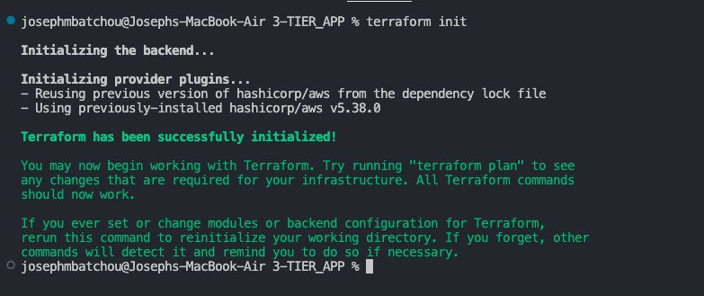
Step 10: Format Files
Apply any changes on files and Review the changes and confirm the good format with command:
bash
terraform fmt
Step 11: Validate Files
Ensure that every files are syntactically valid and ready to go with the command:
bash
terraform validate
If everything is good you will have something like this
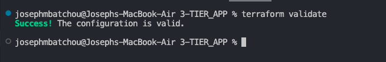
Step 12: Plan
Create an excution plan to provide the achievement of the desired state. It Check and confirm the numbers of resources that will be create. Use command:
bash
terraform plan
The list of all resources in stage of creation will appear and you can see all properties(arguments and attributs) of each resouces
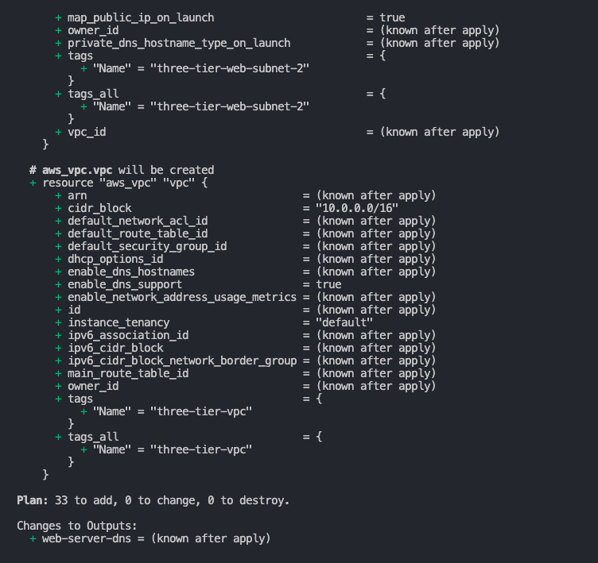
Step 13: Apply
Bring all desired state resources on life. It Launch and create all resources listed in the configuration files. The command to perform the task is:
bash
terraform apply -auto-approve
You will be prompt to type the username and password for the database. After you enter those criticals data the process of creation will start and you will be able to see which resourse is on the way to be create and the time it taking to create.
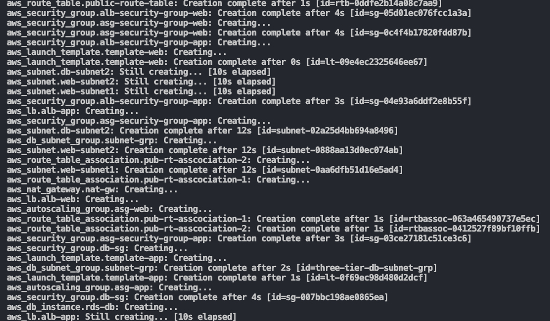
At the end you will recieve a prompt message showing all resources status: created, changed and the numbers of them.
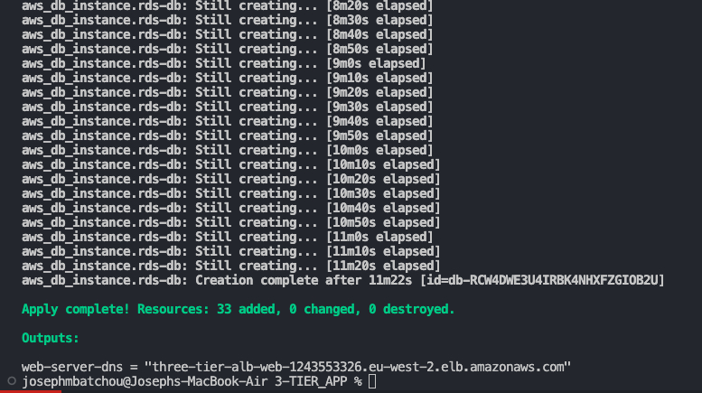
Step 14: Review of resources
Go back on the console and check all actual state resources one by one to see. You will have
VPC
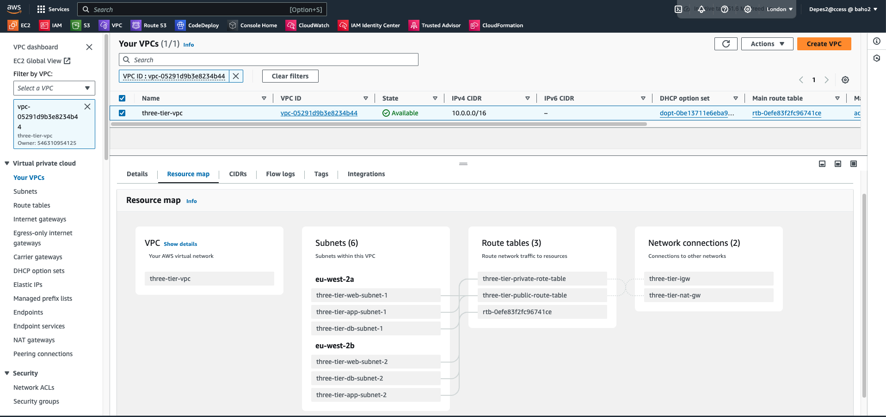
Instances running

Application Load Balancer
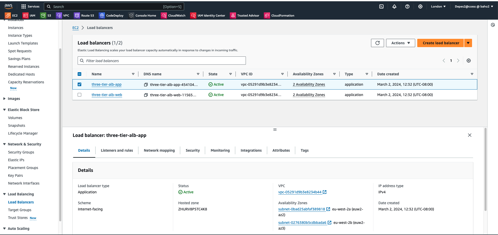
Autoscaling groups
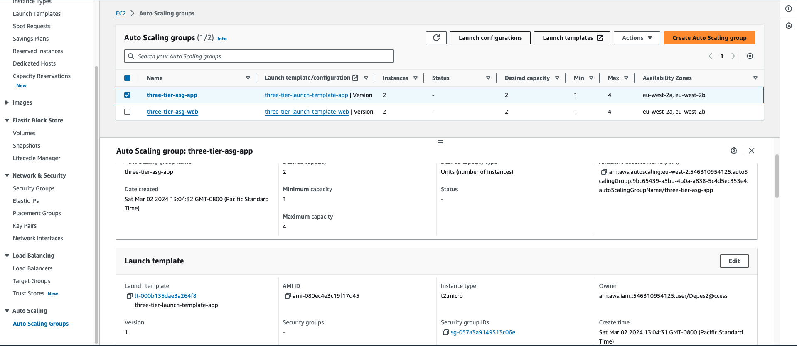
Database
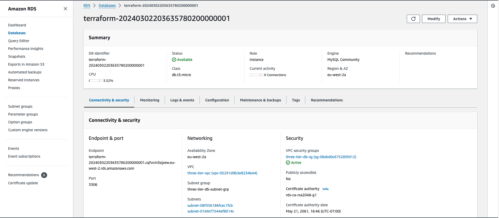
Web page

Step 15: Destroy
Destroy the terraform managed infrastructure meaning all resourcescreated will be shut down. This action can be done with the command "terraform destroy"
bash
terraform destroy -auto-approve
At the end you will recieve a prompt message showing all resources has been destroyed
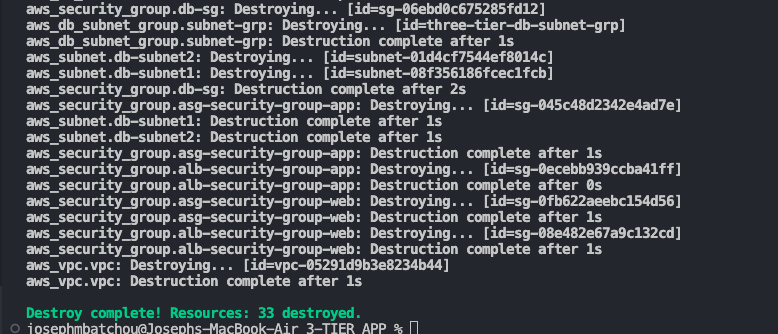
📄 License
This project is licensed under the CloudSpace Academy License